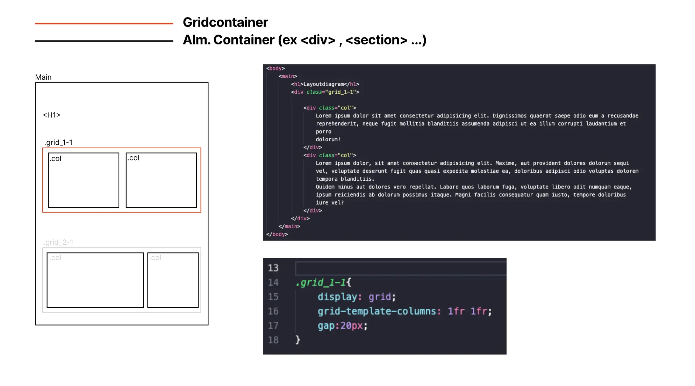
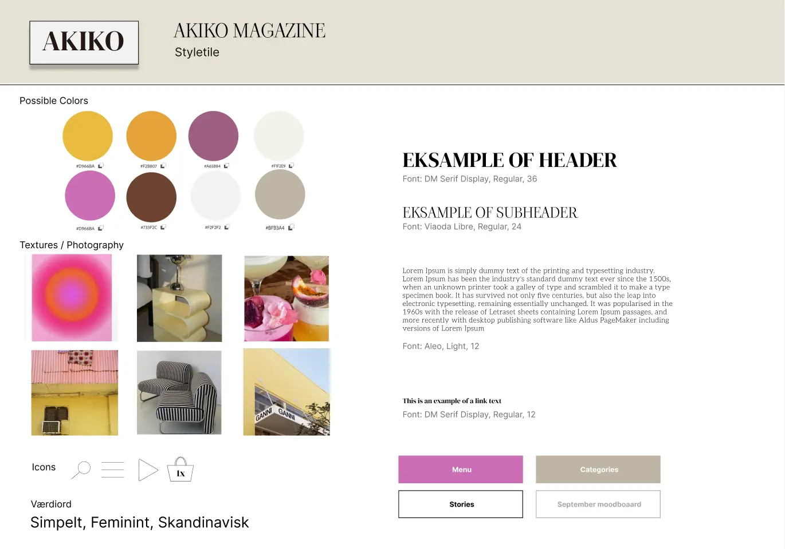
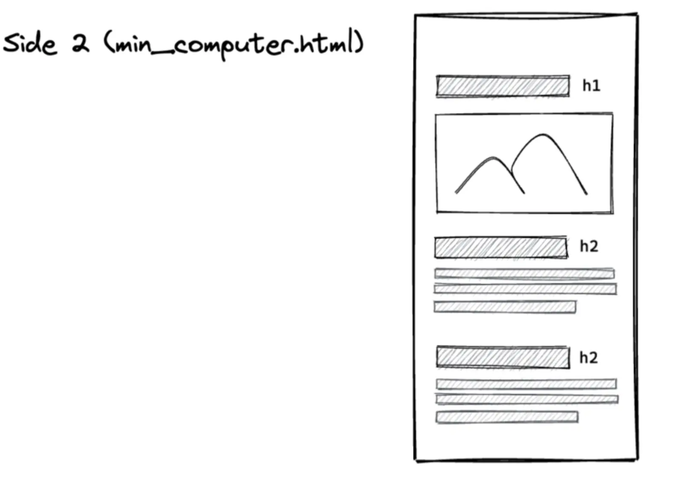
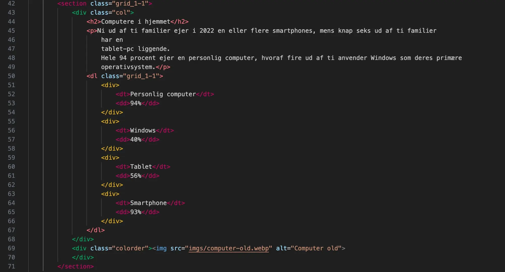

Grundlæggende web.
First look.
I emneuge to, altså grundlæggende web, fik vi til opgave at opsætte et website, som både skulle fungere i mobile og desktop. Fra vores undervisere fik vi tildelt layout diagrammer, wireframes, billeder og andre værktøjer som hjalp os på vej til at opstille vores første website.
Styletile.
Her fik vi også vores første møde med et styletile, her ses et af eksemplerne på de styletiles vi fik undervisning ud fra. Et styletile er et glimrende eksempel på en god start, på designprocessen, her kan man blandt andet få fastlagt stemning, farvepalette og typografi. Dette hjælper med at få sat klare linjer for designet inden man bevæger sig videre, man kan blandt andet udnytte sin styletile ved at lave en 5-sekunders test, sammen med sine værdiord, inden man påbegynder wireframes og kodningen.
Lofi wireframes.
Lo-fi wireframes (low-fidelity wireframes) er enkle, skitseagtige tegninger, der viser opbygningen af en digital brugerflade, f.eks. et spil eller en app. De fokuserer på layout og funktionalitet frem for grafik og detaljer. Formålet er at afprøve idéer hurtigt, få feedback tidligt og justere designet, inden man bruger tid på at udvikle det færdige produkt.
Kodning af site.
Kodning af et website handler om at omsætte designet til en fungerende hjemmeside ved hjælp af HTML og CSS. HTML bruges til at strukturere indhold som tekst, billeder og links, mens CSS styrer det visuelle udtryk – f.eks. farver, skrifttyper og layout. Gennem kodningen bliver designet gjort levende og tilpasset forskellige skærmstørrelser og enheder. I dette tilfælde har jeg kodet i en grid_1-1-1, som ved hjælp af designet i CSS bliver til tre colonner.
